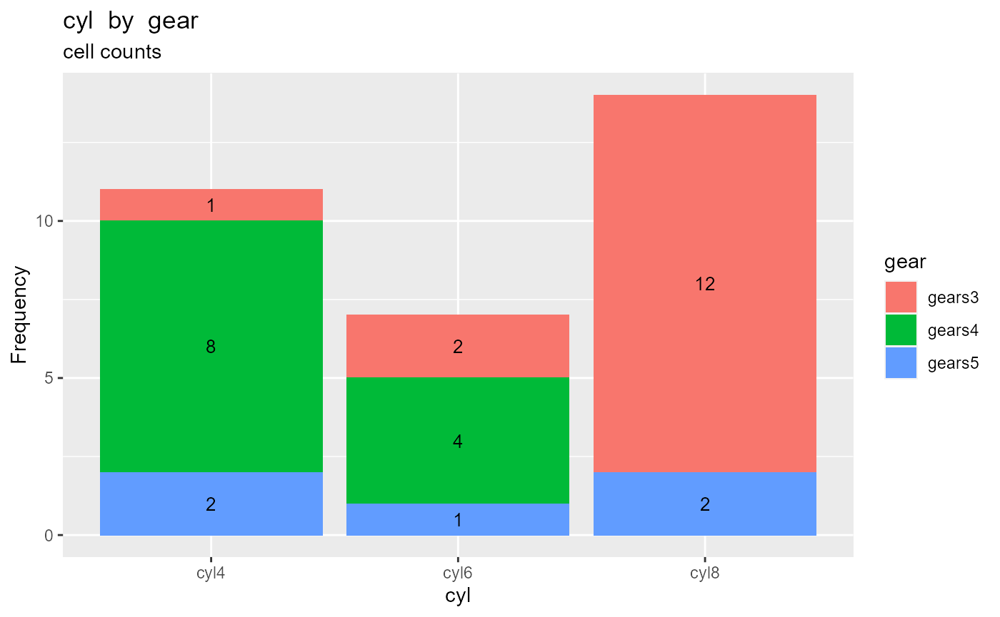
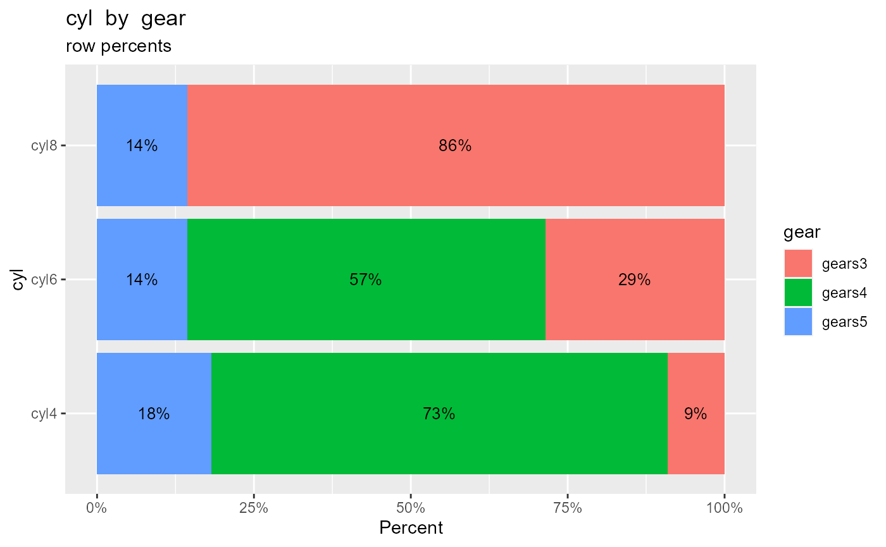
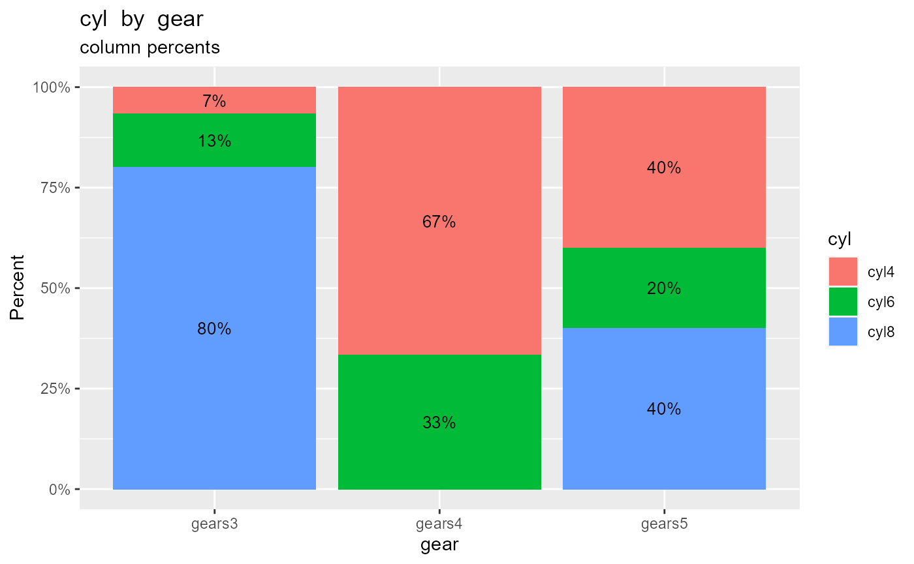

The crosstab function calculates and prints a two-way frequency table.
Given a data frame, a row variable, a column variable, and a type (frequencies, cell percents, row percents, or column percents) the function returns a table with
na.rm = FALSE)total = FALSE)Tables are printed with 2 decimal places for percents (modifiable using digits=#). Variables are coerced to factors if necessary. Adding plot=TRUE produces a ggplot2 graph representing the table.
In the examples, below, the number of car cylinders (cyl) is cross-tabulated with the number of gears (gear) for 32 automobiles in the mtcars data frame.
By default, the crosstab function reports frequency counts for each combination of the two categorical variables.
crosstab(cars74, cyl, gear, plot=TRUE)

#> gear
#> cyl gears3 gears4 gears5 Total
#> cyl4 1 8 2 11
#> cyl6 2 4 1 7
#> cyl8 12 0 2 14
#> Total 15 12 5 32Cell percents add up to 100% overall all the cells in the table.
crosstab(cars74, cyl, gear, type="percent", plot=TRUE)
#> gear
#> cyl gears3 gears4 gears5 Total
#> cyl4 3.12% 25.00% 6.25% 34.38%
#> cyl6 6.25% 12.50% 3.12% 21.88%
#> cyl8 37.50% 0.00% 6.25% 43.75%
#> Total 46.88% 37.50% 15.62% 100.00%Row percents sum to 100% for each row of the table.
crosstab(cars74, cyl, gear, type = "rowpercent", plot=TRUE)

#> gear
#> cyl gears3 gears4 gears5 Total
#> cyl4 9.09% 72.73% 18.18% 100.00%
#> cyl6 28.57% 57.14% 14.29% 100.00%
#> cyl8 85.71% 0.00% 14.29% 100.00%Column percents sum to 100% for each column of the table.
crosstab(cars74, cyl, gear, type = "colpercent", plot=TRUE)

#> gear
#> cyl gears3 gears4 gears5
#> cyl4 6.67% 66.67% 40.00%
#> cyl6 13.33% 33.33% 20.00%
#> cyl8 80.00% 0.00% 40.00%
#> Total 100.00% 100.00% 100.00%You can save the results as a list of tables.
result <- crosstab(cars74, cyl, gear) result$counts #> gear #> cyl gears3 gears4 gears5 #> cyl4 1 8 2 #> cyl6 2 4 1 #> cyl8 12 0 2 result$cellPcts #> gear #> cyl gears3 gears4 gears5 #> cyl4 0.03125 0.25000 0.06250 #> cyl6 0.06250 0.12500 0.03125 #> cyl8 0.37500 0.00000 0.06250 result$rowPcts #> gear #> cyl gears3 gears4 gears5 #> cyl4 0.09090909 0.72727273 0.18181818 #> cyl6 0.28571429 0.57142857 0.14285714 #> cyl8 0.85714286 0.00000000 0.14285714 result$colPcts #> gear #> cyl gears3 gears4 gears5 #> cyl4 0.06666667 0.66666667 0.40000000 #> cyl6 0.13333333 0.33333333 0.20000000 #> cyl8 0.80000000 0.00000000 0.40000000